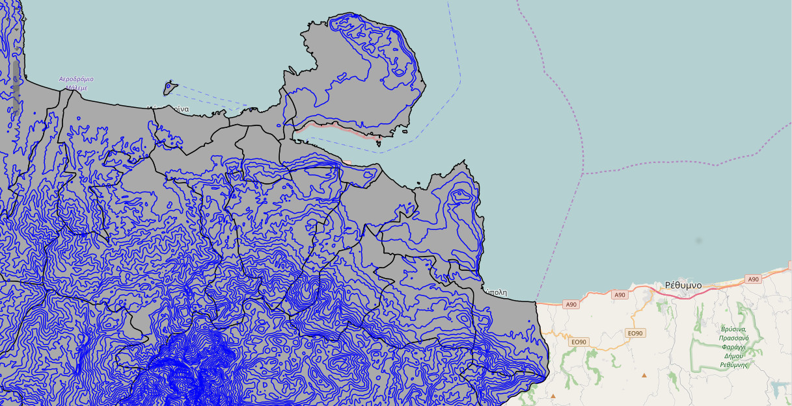

{% extends 'index.html' %}
{% load base_tags %}
{% load i18n %}
{% block title %}Crete-GIS{% endblock %}
{% comment %}
This is where you can override the hero area block. You can simply modify the content below or replace it wholesale to meet your own needs.
{% endcomment %}
{% block hero %}
Crete-GIS Project
Καλωσήρθατε στο Crete-GIS Project
Τo Crete-GIS είναι ένα GeoPortal γεωχωρικών δεδομένων που αφορά την περιοχή της Κρήτης.

Γεωχωρικά Δεδομένα
Σκοπός του είναι ο διαμοιρασμός και η ελεύθερη πρόσβαση γεωχωρικών και γεωγραφικών δεδομένων για τους πολίτες και τους κυβερνητικούς φορείς